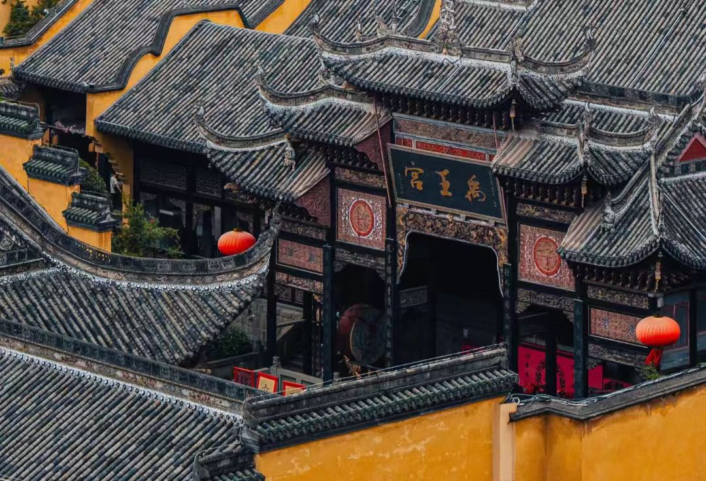

传奇：重庆湖广会馆，又称禹王宫，位于重庆市渝中区东水门长江边，是清代"湖广填四川"移民运动的产物，也是中国现存规模最大、保存最完好的会馆建筑群。会馆始建于清乾隆二十四年（1759年），道光二十六年（1846年）扩建，由湖广（今湖南、湖北）籍移民集资兴建，既是同乡聚会、议事、祭祀的场所，也是清代重庆"八省会馆"之首。建筑群占地8561平方米，建筑面积9210平方米，包括禹王宫、齐安公所、广东公所三大部分，依山就势，层层叠起，气势恢宏。2006年被列为全国重点文物保护单位，是研究清代移民史、商业史、建筑史的重要实物资料。
核心看点：
游览攻略：
交通信息：湖广会馆位于重庆市渝中区长江滨江路芭蕉园1号。公交120路、141路、372路、382路、862路到"道门口"站，步行5分钟。轨道交通1号线、6号线"小什字"站8号出口，步行10分钟。从解放碑步行15分钟可达。自驾可停放在会馆停车场。距重庆江北国际机场25公里，车程40分钟；距重庆北站8公里，车程20分钟。周边有解放碑、洪崖洞、长江索道、朝天门等景点。建议与洪崖洞、长江索道、十八梯组合游览。
移民背景：明末清初，四川历经战乱，人口锐减。据记载，明万历六年（1578年）四川有人口310万，到清顺治十八年（1661年）仅剩8万。为恢复经济，清政府推行"湖广填四川"移民政策，从湖南、湖北、广东、江西、福建等地向四川移民。移民从康熙十年（1671年）开始，持续百余年，移民数量达数百万。重庆作为长江上游重要港口，成为移民的重要集散地。
会馆建立：移民到重庆后，为联络乡谊、互助共济，按籍贯建立会馆。①湖广会馆：湖南、湖北移民共建，乾隆二十四年（1759年）始建；②广东公所：广东移民建，嘉庆年间（1796-1820年）建；③齐安公所：湖北黄州府移民建，道光年间（1821-1850年）建。此外还有江西会馆、福建会馆、陕西会馆、浙江会馆、江南会馆，合称"八省会馆"。
会馆功能：会馆是移民的社会组织。①联谊：同乡聚会，联络感情；②互助：救济贫病，资助孤儿；③商务：交流信息，调解纠纷；④祭祀：祭祀乡土神祇（湖广祭大禹，广东祭妈祖，福建祭天后）；⑤娱乐：演戏、看戏，丰富生活；⑥教育：兴办义学，教育子弟。会馆是移民的"精神家园"。
商业繁荣：清代重庆是西南商业中心。湖广会馆所在的东水门一带是商业码头，有"货堆如山，万商云集"之称。会馆不仅是同乡组织，也是商业行会。商人在会馆洽谈生意、存储货物、住宿休息。会馆有"牙行"（中介）、"镖局"（保安）、"银号"（金融）等商业服务机构。湖广会馆是重庆商业繁荣的见证。
近代变迁：清末民初，会馆功能逐渐衰落。民国时期，部分会馆改为学校、工厂、民居。抗战时期，重庆成为陪都，会馆收容难民。新中国成立后，会馆被单位占用。1980年代，会馆年久失修，濒临倒塌。2003年，重庆市启动湖广会馆修复工程。2005年，修复完成，对外开放。2006年，列为全国重点文物保护单位。
保护修复：湖广会馆修复工程历时三年。①考古：清理出原有建筑基址；②修复：按"修旧如旧"原则，修复禹王宫、齐安公所、广东公所；③重建：重建已毁的厢房、走廊；④环境：整治周边环境，修建观景平台；⑤展示：建立移民博物馆。修复工程获"联合国教科文组织亚太地区文化遗产保护奖"。
总体布局：湖广会馆依山面江，坐东北朝西南。①轴线：禹王宫、齐安公所、广东公所沿江一字排开，各有中轴线；②层次：建筑从江边到山顶，层层升高，形成"台、吊、挑、梭、靠"的山地建筑特色；③院落：各会馆有大门、戏楼、大殿、厢房，围合成四合院；④连接：会馆之间有巷道、台阶相连。建筑与地形完美结合，体现"天人合一"的思想。
建筑结构：会馆为木结构建筑。①柱：用直径30-50厘米的楠木、杉木，柱础有鼓形、方形、莲花形；②梁：穿斗式与抬梁式结合，大梁直径达60厘米；③墙：用青砖砌筑，有封火墙；④屋顶：硬山、悬山、歇山顶，铺小青瓦。建筑结构严谨，抗震性能好。
戏楼建筑：禹王宫戏楼是建筑精华。①屋顶：三重檐歇山顶，檐角高翘，如飞鸟展翅；②台口：宽6米，深5米，高2.5米，呈八字形；③藻井：穹窿形藻井，有扩音效果；④看台：大殿、厢房作为看台，可容数百人。戏楼雕刻精美，有"无木不雕，无石不刻"之说。
装饰艺术：会馆装饰丰富多彩。①木雕：戏楼梁架雕刻《三国演义》"桃园结义""三顾茅庐"等故事，人物多达数百；②石雕：柱础雕刻狮子、麒麟、莲花，栏杆雕刻"暗八仙"；③砖雕：墙面雕刻"福禄寿喜"等吉祥图案；④灰塑：屋脊塑有鳌鱼、宝瓶、仙人。装饰融合湖广、巴蜀、江南风格。
封火墙：会馆封火墙独具特色。①形式：有"人"字形（如人群）、"一"字形（如屏风）、"品"字形（如品字）等；②功能：防火、防风、防盗，适应重庆炎热多雨的气候；③装饰：墙头有灰塑、彩绘，有花草、鸟兽、人物等图案；④色彩：以白、灰为主，朴素大方。封火墙是会馆的标志性元素。
建筑材料：会馆采用本地材料。①木材：用本地楠木、杉木，质地坚硬，耐腐蚀；②石材：用本地青石，雕刻精细；③砖瓦：用本地黏土烧制的青砖、小青瓦；④石灰：用本地石灰，做灰塑、彩绘。材料体现地方特色，也降低了建筑成本。
祭祀文化：会馆是移民祭祀的场所。①禹王祭祀：湖广移民祭祀大禹，祈求风调雨顺；②关帝祭祀：商人祭祀关羽，祈求生意兴隆；③妈祖祭祀：广东移民祭祀妈祖，祈求水路平安；④祖先祭祀：清明、中元祭祀祖先，不忘根本。祭祀活动增强移民的凝聚力。
戏曲文化：会馆戏楼是戏曲演出中心。①川剧：演出《白蛇传》《柳荫记》等川剧经典；②汉剧：湖广移民带来汉剧，在会馆演出；③粤剧：广东移民演出粤剧；④傩戏：祭祀时演出傩戏，驱邪纳福。戏曲既娱乐生活，也传播文化。
饮食文化：移民带来各地饮食。①湖广菜：有蒸菜、煨汤，口味偏咸鲜；②粤菜：有烧腊、煲仔饭，口味清淡；③川菜：融合各地口味，形成麻辣特色。会馆有厨房，可办"九大碗"等宴席。饮食文化是移民文化的重要组成部分。
方言文化：移民带来各地方言。①湖广话：湖南、湖北方言，是重庆方言的基础；②粤语：广东移民说粤语；③客家话：部分广东、江西移民说客家话。会馆是同乡说家乡话的场所。多种方言交融，形成重庆方言的特色。
民俗活动：会馆有丰富的民俗活动。①庙会：春节、端午、中秋有庙会，热闹非凡；②龙舟：端午在东水门长江划龙舟；③舞狮：春节舞狮，祈求吉祥；④灯会：元宵办灯会，赏灯猜谜。民俗活动传承家乡文化，丰富移民生活。
家族文化：移民重视家族传承。①修谱：编修族谱，记录家族历史；②建祠：在会馆设祠堂，供奉祖先牌位；③助学：设立义学，资助子弟读书；④济贫：救助族中贫困者。家族文化增强移民的归属感。
历史价值：湖广会馆是清代移民史的见证。①移民史：记录"湖广填四川"的移民过程；②商业史：反映清代重庆的商业繁荣；③建筑史：体现重庆山地建筑的特色；④社会史：展示移民的社会组织、文化生活。会馆是研究清代重庆社会的"活化石"。
建筑价值：湖广会馆是中国会馆建筑的典范。①类型价值：是中国现存规模最大、保存最完好的会馆建筑群；②艺术价值：建筑雕刻精美，装饰丰富，是雕刻艺术的宝库；③技术价值：适应山地地形的建筑技术，有重要参考价值；④科学价值：封火墙、排水系统等设计科学。会馆是"山地建筑的博物馆"。
文化价值：湖广会馆是移民文化的重要载体。①移民文化：记录移民的乡愁、奋斗、融合；②戏曲文化：保存古戏楼，传承传统戏曲；③祭祀文化：保留民间信仰仪式；④民俗文化：传承传统民俗活动。会馆是移民文化的"基因库"。
社会价值：湖广会馆在重庆社会生活中具有重要地位。①城市名片：是重庆重要的历史文化景观；②情感纽带：连接湖广移民后裔的情感；③教育功能：是爱国主义教育、乡土教育的重要基地；④社区功能：举办文化活动，丰富市民生活。会馆是重庆的"精神地标"。
旅游价值：湖广会馆是重庆重要的旅游景点。①景观价值：建筑与长江、大桥构成独特景观；②文化价值：移民文化、建筑文化、戏曲文化吸引游客；③经济价值：年接待游客数十万人次，带动旅游发展；④品牌价值："湖广会馆"成为重庆文化旅游的重要品牌。会馆是重庆旅游的"必游之地"。
保护与利用：湖广会馆得到科学保护。①法律保护：2006年列为全国重点文物保护单位；②规划保护：编制保护规划，划定保护区、建设控制地带；③工程保护：2003-2005年进行大规模修复，恢复历史风貌；④研究展示：建立移民博物馆，举办展览、讲座；⑤合理利用：发展文化旅游，举办戏曲演出、民俗活动；⑥社区参与：与当地社区合作，共同保护。湖广会馆的保护经验，为历史建筑保护提供了成功范例。